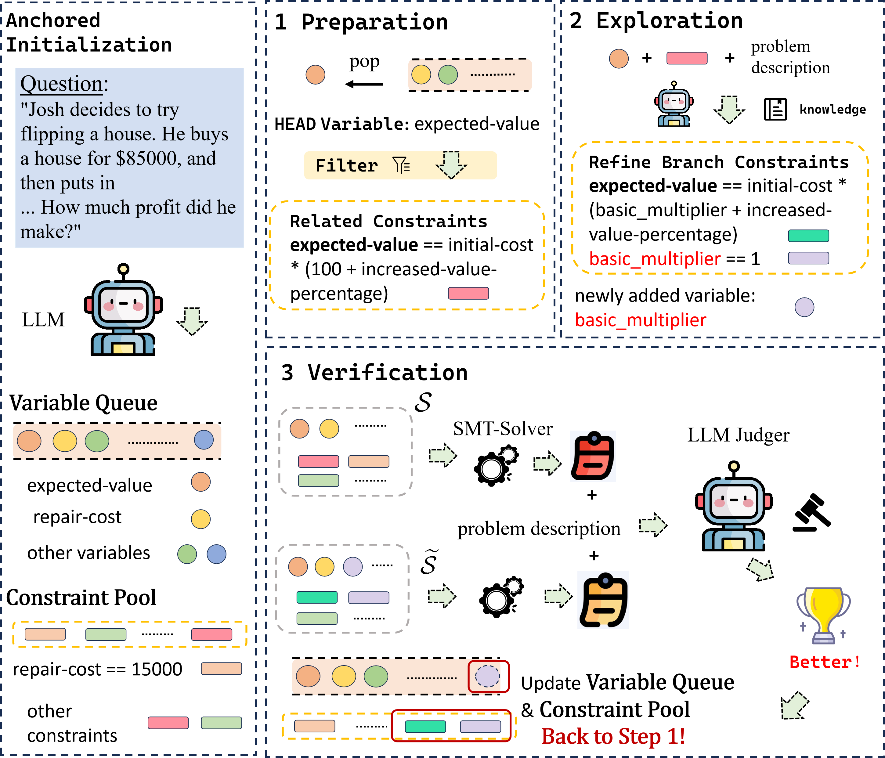

Large language models (LLMs) have demonstrated impressive performance on reasoning tasks, including mathematical reasoning. However, the current evaluation mostly focuses on carefully constructed benchmarks and neglects the consideration of real-world reasoning problems that present missing or contradictory conditions, known as ill-defined problems. To further study this problem, we develop a large-scale benchmark called Problems with Missing and Contradictory conditions (PMC) containing over 5,000 validated ill-defined mathematical problems. Our preliminary experiments through \benchmark reveal two challenges about existing methods: (1) traditional methods exhibit a trade-off between solving accuracy and rejection capabilities, and (2) formal methods struggle with modeling complex problems. To address these challenges, We develop Variable-Constraint Search (VCSearch), a training-free framework that leverages formal language to detect ill-defined problems, where a variable-constraint pair search strategy is incorporated to improve the modeling capability of formal language. Extensive experiments demonstrate that VCSearch improves the accuracy of identifying unsolvable problems by at least 12% across different LLMs, thus achieving stronger robust mathematical reasoning ability.

However, modeling mathematical problems with formal language accurately is not trivial.
We first propose a Variable-Constraint Dynamic Search (VCSearch) that systematically discovers new variables and constraints through an iterative searching process consisting of three steps: Preparation, Exploration, and Verification.
@article{tian2024vc,
title={VC Search: Bridging the Gap Between Well-Defined and Ill-Defined Problems in Mathematical Reasoning},
author={Tian, Shi-Yu and Zhou, Zhi and Yu, Kun-Yang and Yang, Ming and Jia, Lin-Han and Guo, Lan-Zhe and Li, Yu-Feng},
journal={arXiv preprint arXiv:2406.05055},
year={2024}
}